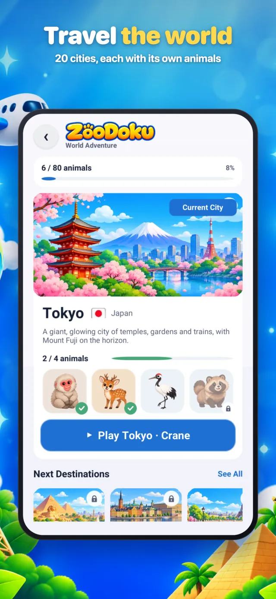
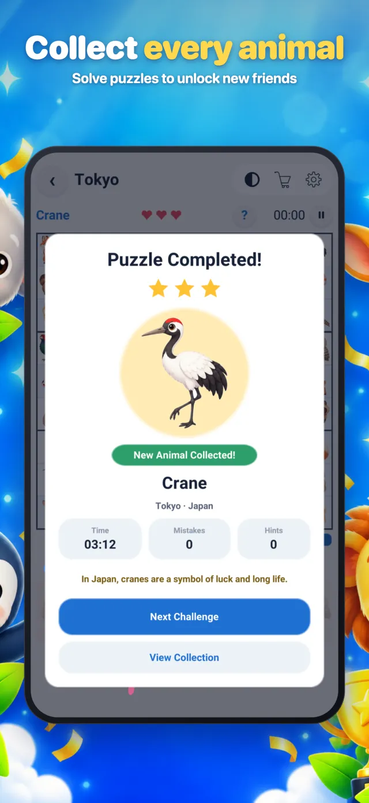
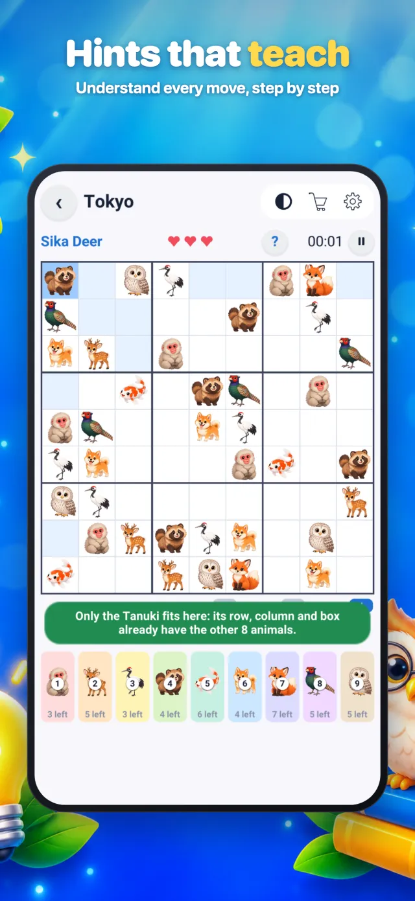
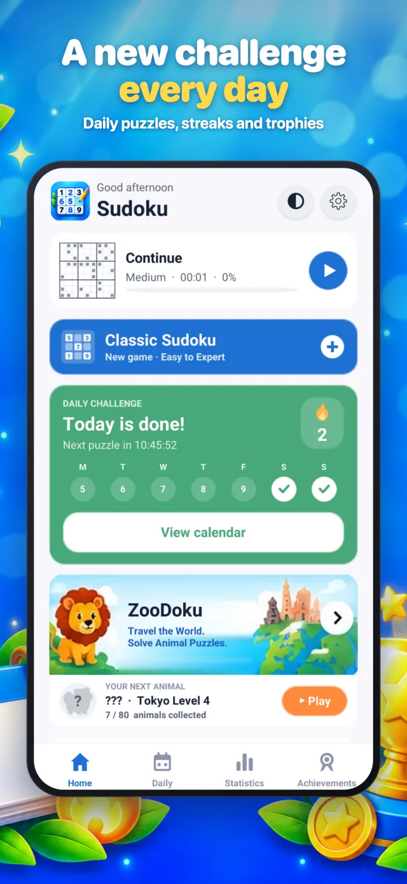
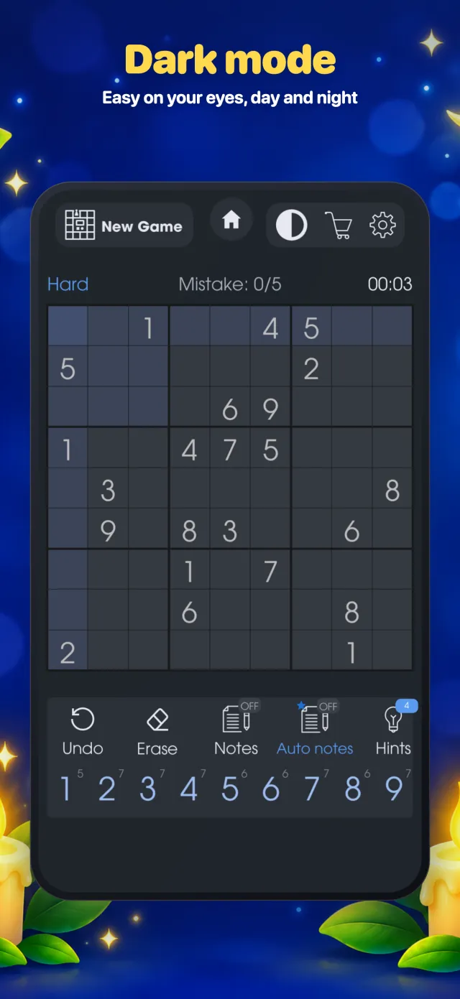

Two ways to play Sudoku.
Zero internet needed.
Solve the classic 9×9 Sudoku you know and love, or try ZooDoku: the same rules, but with cute animals instead of numbers, as you travel through 20 cities around the world.
- 100% offline
- Easy to Expert
- Hints that teach
- 26 languages
One app, two games
Open the app and choose from the home page. Your progress in each game is saved separately, so you can switch any time.
Classic Sudoku
The timeless 9×9 logic puzzle. Fill every empty square so that each row, each column and each 3×3 box contains the numbers 1 to 9 exactly once. No maths, just logic.
Pick your level
Tools that help
- Notes (pencil marks) – write small candidate numbers in a square, or turn on Auto notes to fill them in for you.
- Smart highlighting – tap a number to light up every copy of it, plus its row, column and box.
- Hints – stuck? A hint reveals the next logical move.
- Mistake check – see straight away when a number breaks the rules.
- Undo & Erase – step back or clear a square at any time.
- Continue later – leave mid-game and pick up exactly where you stopped.
ZooDoku: Sudoku with animals
ZooDoku uses exactly the same rules as Sudoku, but instead of the numbers 1–9 you place 9 different animals. Each row, column and 3×3 box must contain every animal once. It's a friendly way for kids and beginners to learn Sudoku, and a fresh twist for experienced players.
- Meet the animals – before each puzzle, a card shows you the animals you'll be placing.
- Tap to light up – tap any animal to highlight all of its copies on the board.
- Easy 3-step guide – a short tutorial shows new players how to pick, place and check.
- Bigger board – large, clear animal pictures that are easy to tap on any phone.



How to play Sudoku
New to Sudoku? It takes one minute to learn. The rules are the same in both games.
Look at the grid
The board has 9 rows, 9 columns and 9 boxes of 3×3. Some squares are already filled in.
One of each
Every row, column and box needs each number 1–9 (or each of the 9 animals) exactly once. No repeats.
Use logic
Find a square where only one answer fits. Each correct answer makes the next one easier. No guessing needed!
Example: this row already has 1, 2, 3, 4, 6, 7, 8 and 9. The only number missing is 5, so the empty square must be 5.
Made for every player
100% offline
Play on a plane, train or holiday. No Wi-Fi or mobile data needed.
Daily challenge
A new puzzle every day. Keep your streak going, earn trophies and fill your calendar.
Statistics
Best times, games won and streaks for every difficulty level.
Achievements
Unlock badges as you play, from your first win to expert milestones.
Dark & light mode
Switch with one tap inside any game. Easy on your eyes, day and night.
26 languages
English, Arabic, Chinese, Spanish, French, German, Japanese, Hindi and many more.
For all ages
ZooDoku for kids and beginners, Expert Sudoku for seasoned solvers.
Auto save
Close the app any time. Your game is saved and waiting for you.
Take a look inside
Tap any screenshot to see it larger.


Questions & answers
Is the game free?
Yes. Sudoku Offline Classic Puzzle is free to download and play. It shows ads to support development.
Does it really work without internet?
Yes. Both Classic Sudoku and ZooDoku work completely offline. Ads and anonymous statistics are only sent when your phone is online.
What is ZooDoku?
ZooDoku is Sudoku with animals. The rules are exactly the same as Sudoku, but you place 9 animals instead of the numbers 1–9. You travel through 20 cities, unlock the animals of each place and learn a fun fact about each one.
Is it good for kids?
Yes. ZooDoku's animal pictures, 3-step guide and hints that explain each move make it a great first Sudoku for children. Adults can play Classic Sudoku up to Expert level.
Will I lose my progress if I close the app?
No. Your current game, statistics, streaks and animal collection are saved on your device automatically.
Which devices are supported?
iPhone and iPad (App Store) and Android phones and tablets (Google Play).
How do I contact you?
Email us at Info@lwf.my or visit the Support page.